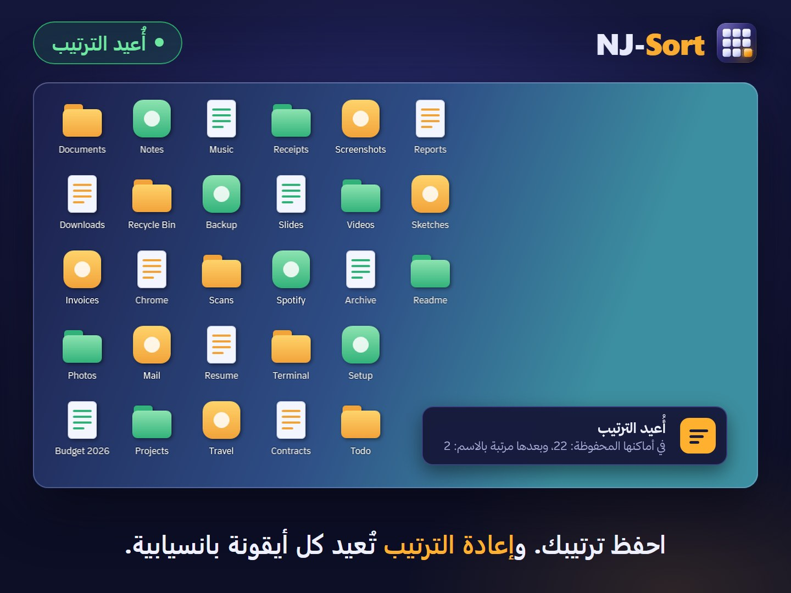
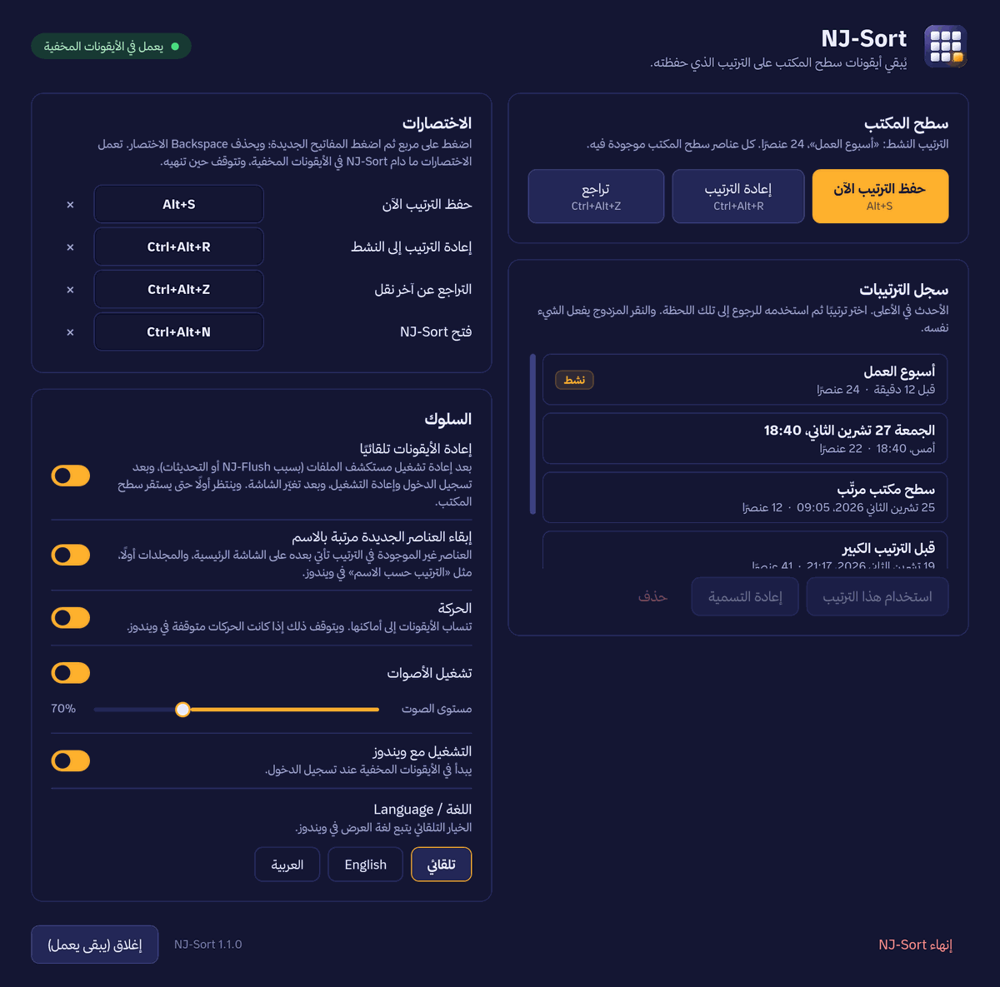
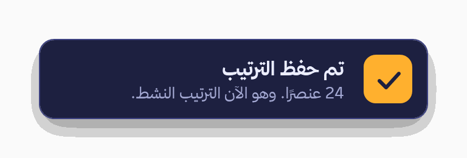
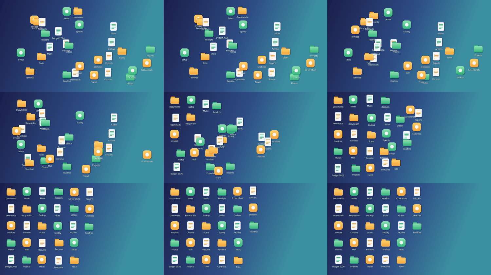

أيقوناتك، حيث وضعتها.
أيقونات سطح المكتب تتحرك من مكانها؟ احفظ ترتيب سطح مكتبك. وحين يبعثره ويندوز، يعيد NJ-Sort كل أيقونة إلى مكانها بانسيابية.

- مجانيبلا حساب ولا إعلانات
- رخصة MITمفتوح المصدر
- نحو 1.3 ميغابايتملف واحد بلا مثبّت
- ويندوز 10 و11بلا صلاحيات مدير
احفظ مرة واحدة. وتبقى في مكانها.
اضغط Alt S للحفظ. كل حفظ يدخل في السجل، فيمكنك الرجوع إلى أي ترتيب سابق. العناصر غير الموجودة في الترتيب تأتي بعده مرتبة بالاسم، كما يفعل «الترتيب حسب الاسم» في ويندوز.

- حفظ الترتيب الآنيحفظ مكان كل أيقونة كترتيب جديد، ويجعله الترتيب النشط.
- سجل الترتيباتالأحدث في الأعلى، وعلى الترتيب النشط علامة. اختر أحدها للرجوع إلى تلك اللحظة.
- الاختصاراتاضغط على مربع ثم اضغط المفاتيح الجديدة. ويحذف Backspace الاختصار.

ما يفعله حين يحرّك ويندوز الأشياء.
حين يُعاد تشغيل مستكشف الملفات يفرغ سطح المكتب لحظة. ولا يظن NJ-Sort أنك حذفت ملفاتك.
ينتظر حتى يستقر سطح المكتب، ثم يعيد ترتيبك المحفوظ، ويتحقق مرة أخرى بعد ثوانٍ. وهذا يشمل التحديث أو الانهيار أو أداة مثل NJ-Flush.
سجل الترتيبات
يُحفظ كل ترتيب، والأحدث في الأعلى. يمكنك استخدام أي منها أو إعادة تسميته أو حذفه. الترتيبات المحذوفة تذهب إلى سلة المحذوفات.
العناصر الجديدة بالاسم
يظهر التنزيل الجديد بعد أيقوناتك المرتبة، بترتيب الأسماء والمجلدات أولًا. ولا يغطي أيًّا من أيقوناتك.
التراجع
يمكن التراجع عن كل إعادة ترتيب بمفتاح واحد، والإعادة بالمفتاح نفسه.
الانسياب والصوت
تنساب الأيقونات إلى أماكنها واحدة تلو الأخرى، وتؤكد رسالة صغيرة ما تحرّك، ويُسمع صوت قصير مسجّل، لكل من الحفظ وإعادة الترتيب والتراجع والأخطاء صوته. ويمكن إيقاف الحركة والصوت كلٌّ على حدة، ولمستوى الصوت شريط تمرير.
العربية والإنجليزية
التطبيق كله، من النافذة إلى الرسائل وقائمة الأيقونات المخفية، متوفر بالعربية من اليمين إلى اليسار. اختر «تلقائي» أو English أو «العربية» من النافذة؛ والخيار التلقائي يتبع لغة العرض في ويندوز.
اختصارات يمكنك تغييرها
تعمل ما دام NJ-Sort في الأيقونات المخفية. اضغط على مربع في النافذة ثم اضغط المفاتيح الجديدة.
أيقونات تنساب ولا تقفز.
ترتفع كل أيقونة قليلًا، ثم تسير في منحنى لطيف، وتستقر في مكانها بهبوط ناعم. وتنطلق واحدة تلو الأخرى، فيعود سطح مكتب من 28 أيقونة، مثل العرض، إلى مكانه في أقل من ثانية. وإن كانت الحركات متوقفة في ويندوز، توقفت هذه أيضًا.

- الارتفاعتراجع صغير قبل الانطلاق، فتبدو البداية قرارًا.
- المنحنىقوس لطيف بدل انزلاق مستقيم.
- الهبوطتجاوز طفيف للمكان ثم استقرار عليه تمامًا.
ثلاث خطوات. بلا صلاحيات مدير.
نزّل
احصل على NJ-Sort.exe من آخر إصدار. ملف واحد بلا مثبّت، حجمه نحو 1.3 ميغابايت.
افتحه
ينسخ نفسه إلى %LOCALAPPDATA%\NJ-Sort ويفتح نافذته وينتظر في الأيقونات المخفية.
احفظ ترتيبك
رتّب أيقوناتك ثم اضغط Alt S. ومن بعدها يبقيها NJ-Sort في أماكنها.
لويندوز 10 و11. الملف غير موقّع رقميًا بعد، فقد تسألك SmartScreen عند أول تشغيل: اختر «مزيد من المعلومات» ثم «تشغيل على أي حال». لا يحرّك NJ-Sort إلا أيقونات سطح المكتب نفسها. وإن كان «ترتيب الأيقونات تلقائيًا» في ويندوز مفعّلًا، يطلب منك إيقافه بدل أن ينازعه.